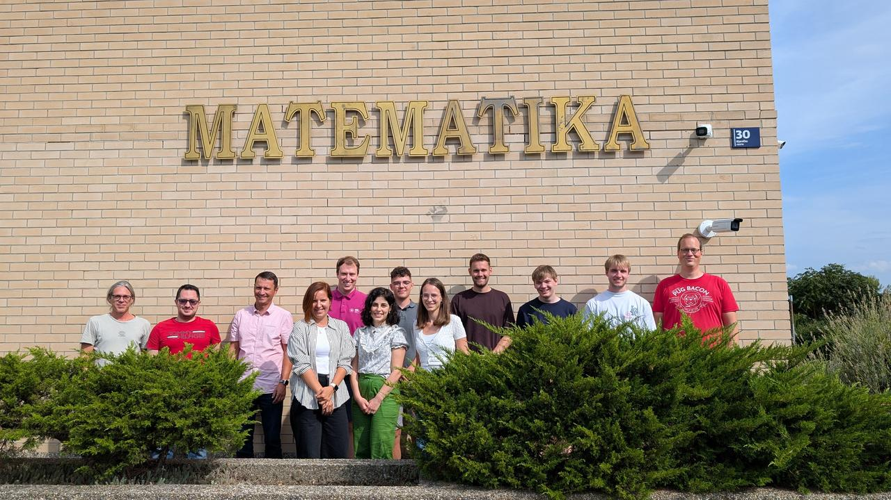

Welcome

pyMOR School is an annual event for future and current pyMOR users and developers. The seventh iteration of pyMOR School will take place in Zagreb, Croatia, from Monday morning, September 8 to Friday noon, September 12. Experienced users of pyMOR and related software packages are especially invited to join us for the integrated user meeting sessions. A code sprint will take place on Thursday evening.
The School will offer interactive introductory lectures on some of the most important MOR methods and how to use these methods with pyMOR. We will also discuss pyMOR's technical design, how to contribute to pyMOR and present some more advanced applications. In the interactive sessions, participants will have the opportunity to either get more hands-on experience with pyMOR through exercise problems or to work on integrating pyMOR into their own projects with the help of the pyMOR developers.
The user meeting sessions will feature user-contributed talks showcasing pyMOR-related projects and discussion sessions to shape pyMOR's future development. The code sprint is an opportunity to get involved in pyMOR development with the help of the pyMOR developers. Of course, existing users and previous School participants are also invited to join us for the whole week of pyMOR School.